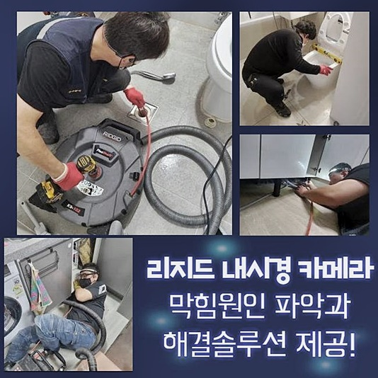
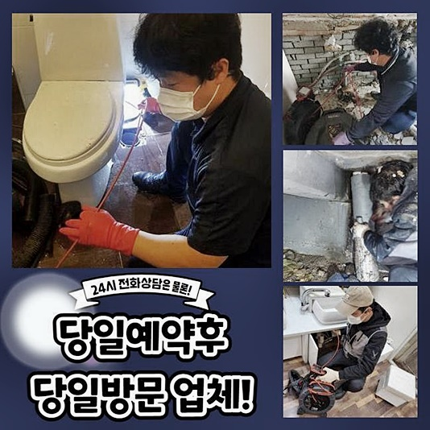
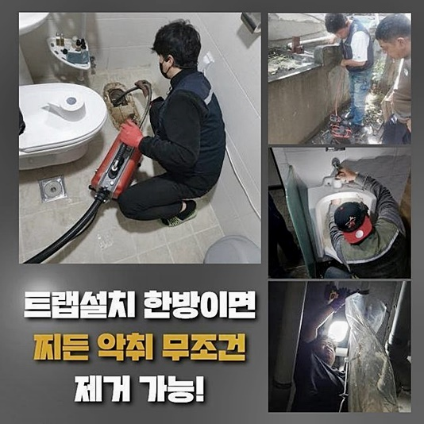
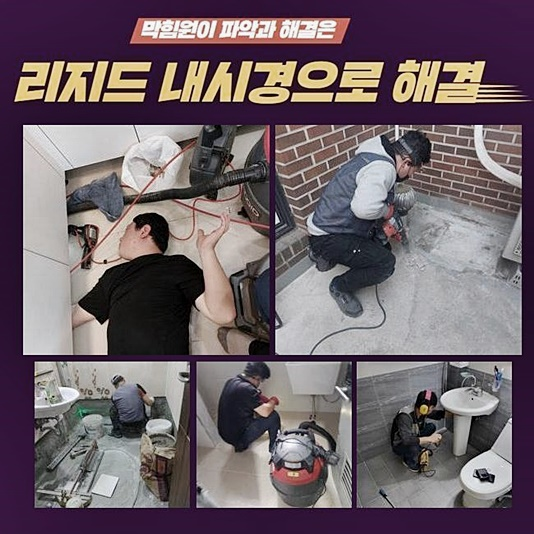
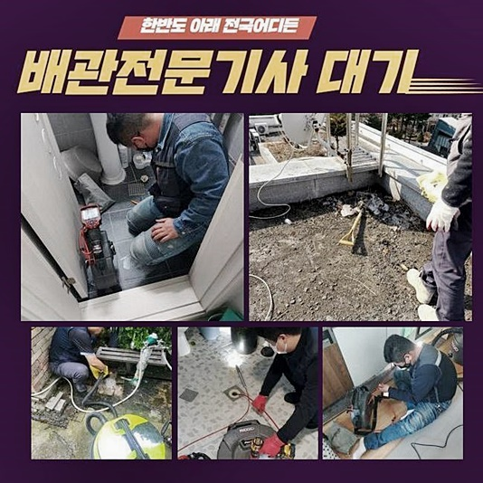
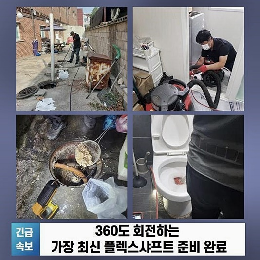
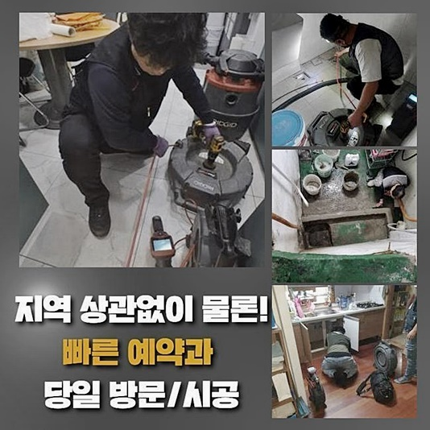

🏠 수원 평동씽크대배수구역류 곡선동 하수구뚫어주는업체 배관전문
용인시 처인구 배관막힘 전문 시공 후기

📋 작업 개요
- 위치: 용인시 처인구, 수원시 영통구, 화성시 동탄
- 서비스 유형: 배관막힘, 고압세척
- 작업 일시:
- 업체명: 하수구수사대 (010-5615-2118)
🔍 문제 상황
수원 평동씽크대배수구역류 곡선동 하수구뚫어주는업체 배관전문
하수관 고장이 생긴다면 여러가지로 어려움이 유발되는데요
수돗물을 못쓰니 설거지 등을 못할 것이며 욕실도 못 쓸수가 돼버리기도 한답니다
이런 사안들은 한시간 정도 못쓰더라도 큰 불편함을 유발할수 있겠죠
게다가 해당 문제가 주변 세대원에까지 피해를 주는 경우도 많아요
그렇게 된다면 예상을 뛰어넘는 금전보상이 요구될수 있어요
그렇기에 관로의 트러블이 일어났다면 고민말고 곧바로 점검 가능한 기술자를 수소문해서 해결보셔야 해요
개문시공을 혼자서 처리할수 있다 생각하고 용감하게 고쳐보려하지만 생각한 것처럼 까다롭습니다
그렇게 하시다가 외려 파이프에 쇼크를 주며 물유출이 발발하거나 인접 설비가 고장나면서 예상을 뛰어넘는 업무로 비용지출이 늘수도 있어요
연초에 출장간 처소의 의뢰자께선 무리해서 고쳐보려 진행하다 배관 물샘 사태까지 연결된 정황도 있었습니다
공연스레 만지시다가 사태가 더욱 곤란해질수 있어서 사태가 난해하다면 인력을 찾아서 진단받으시는 게 합당합니다
이번에 간 곳은 전원주택이었으며 긴급하게 문의를 받은후에 이동하였어요
의뢰인분이 세컨 하우스로 사용하고 있으셨고 1층 창고옆에 트러블이 일어났다고 하셨어요
주택에 머물지도 않았고 일주일만에 들어와 보았더니 물이 역류중이라 너무 당황하신 상태였죠
손님분에게 특정부근에서 정체가 일어난것 같다 이야기하였더니 작업시간은 얼마큼이나 소요되느냐 물어보셔서 시간과 견적금까지 다 고하였고 곧바로 수리를 원하신다고 말하셨기에 공사에 착수했어요

🔎 원인 분석
💡 전문가 진단: 정밀 진단 장비를 사용하여 슬러지의 고착 여부를 판명하고 타격/세척 작업을 실시했습니다.
하수도와 관련지어서 이해하셔야 되는게 막힘현상은 상층부에서 발생하기도하고 배수관의 설치방향에 의거하여 하부에서 손상되면서도 나타날수가 있다는 거예요
그러하기에 상황을 추정하여 수리해서는 확실한 마감을 얻어내기가 힘들어요
그렇기에 정확히 단초를 찾아 시공방안을 찾아내야하죠
그저 구멍을 낸다고 완성되는게 아니고요
그리되면 위치를 잘못잡아서 몇일 안가서 다시금 배관수선 업무를 해야 할 수 있죠
그렇기에 세부적인 진단이 필수라는 것입니다
우리들은 소지중인 소형촬영 설비로 얼마나 막힌것인지 파악하였어요
겉모습으로는 유분기가 많다고 여겨져서 여쭤보니 지지난주 접시를 닦는과정에서 누적된 기름들을 하수도로 쏟아버리셨다고 말하셨답니다
우리는 그부분이 정체의 큰 연유라고 추측할수 있었죠
의뢰자께서는 으레 기름기는 액상이고 끓인 물을 사용해서 닦아내었기에 별문제가 없을거라 생각했다고 하셨죠
보편적으로 기름기는 배수구에 넣는다고 해도 문제가 발생치 않을거라고 생각하시는데요
이것은 실제와 판이하고 외려 트러블의 상황을 촉발합니다
유분은 고온에서 흐름성을 유지합니다
하지만 그것이 저온이 되버리면 고형화가 됩니다
그것들이 잔존하면서 다양한 노폐물과 결속하며 계속적으로 부피가 증대되고 말미에는 관로를 차단하기에 이곳처럼 역류가 일어나는 거예요

🔧 작업 과정
그렇기 때문에 이번의 주택처럼 정기적인 소제를 피하고 싶으시다면 평상시에 기름성분을 배수공으로 투입하지 않으시는게 합당합니다
금번 의뢰인께도 해당 내용을 말해드렸더니 잊지않고 적용하겠다고 하시더라고요
짬짬이 배관cctv를 검사해가면서 이물질들이 똑바로 소제되는지 파악하였죠
물론 이곳처럼 유분찌꺼기를 내렸다고해서 곧바로 통수가 안되는건 아니예요
각종 이물들이 누증되면서 기름기와 엉기며 통수가 안되게 됩니다
베이킹소다 등을 정기적으로 사용하여 장애를 막는것도 생각할수 있지만 원천적인 수습은 사실상 안된답니다
거기에 더해 액상희석용품도 매한가지로 굳은 고형물을 깨끗이 제거하기는 한계가 명확하죠
지속해서 샤프트와 같은 공구를 작동시켜서 끈끈해진 석회질들을 없앴고 그것 말고도 파이프 안쪽에 뭉쳐있던 머리카락 뭉치와 석회물질까지 소멸시켰죠
긴 시간동안 적체된 이물질이 상당하단 사실을 알게 되었답니다
촬영기기를 살피면서 순서에 맞게 역류증세를 처치하여 배수공으로 오수가 점차적으로 사라졌는데 속시원히 통수가 되기 힘들어요
그건 밖에 있는 배수시설에도 트러블이 발현되었다는 증거였어요
가정 안에서 처치할 것들은 끝냈으니 바깥쪽만 처치하면 결과가 나올것으로 보였어요
의뢰인께 이것에 대하여 설명해 드렸으며 바깥으로 이동해서 맨홀마개를 열어 점검해 봅니다
우리들의 추정대로 그 안에는 이물질이 가득차 있었죠
덮개를 오픈한 상태로 고압세척 장비를 활용하여 신속히 작업하였답니다
그나마 가정 안에서 소제하였기에 오래 안걸리고 끝마칠 수 있었어요
마침내 배관이 개통되며 쏜살같이 빠져나가는 걸 확인할수 있었죠
이물이 토출되지 않을때까지 지속해서 물줄기로 소청했으며 몇분 뒤에 깔끔한 배수구물이 흘러나왔어요
깔끔한 배수구물이 나와야 관로에 침전물이 청소되었다는 사실을 뜻하기에 매우 중요하다고 볼수 있어요
기름불순물도 해당 방안으로 완벽하게 처리해 냈어요
보시는 것은 마지막으로 토출된 잔재들인데 이것을 제외하고도 상당한 용량이 처리되었어요
배관을 이번 장소에서 통수하면서 거듭 꾸준한 진단은 당연히 중요하며 상시적으로 이용을 제대로 해야 된다는 사항을 곱씹었으며 그 내용을 손님분에게도 안내해 드렸죠
의뢰인분도 찌꺼기만 가볍게 걷어내면 마무리될것으로 간주하셨는데 형편이 커져서 놀라셨지만 해결된 걸 확인하시곤 안심말했어요
앞으로는 늘상 이용하는 공간이 아니라 하여 방치할게 아니고 연말에는 한번씩 클리닝을 해야하겠다고 다짐하셨어요


✅ 작업 완료
바깥으로 토출된 침전물들 때문에 오손된 부근을 깔끔하게 정리하였죠
흔히 하수관막힘이 발발하면 오로지 시공만 행하고 귀가하는 것으로 생각하지만 저희는 이렇게 주변청소까지 완벽히 진행합니다
거기에 더해 주변 설치물에도 타격을 가하면 이차적인 고장이 일어날수도 있기에 그것들도 빈틈없이 신경쓰고 있죠
의뢰인분이는 짜증나는 정황이었지만 우리들의 완벽한 결과물을 바라보시고 안심하시게 되었답니다
우리들은 관로정체가 발발하였다면 공휴일이라도 즉각적으로 내방하여 작업합니다
이런 고장은 가능한한 빨리 처리해야 정황이 심각해지지 않았어요




⚠️ 하수구 배관 막힘 예방 및 관리 가이드
- ✅ 머리카락, 비닐, 물티슈 등 물에 분해되지 않는 이물질은 절대 흘려보내지 마세요.
- ✅ 기름기 많은 식기는 설거지 전 키친타올로 먼저 기름때를 닦아내세요.
- ✅ 주기적으로 배수구에 뜨거운 물을 가득 부어주어 유지방 고착을 방지하세요.
- ✅ 작업 후 1년 이내 재발 시 무상 A/S 보증 서비스를 제공합니다.
💡 핵심 정리
- 확실한 장비 작업(내시경 점검 및 샤프트 스케일링)으로 원인을 뿌리 뽑습니다.
- 작업 후 1년 이내에 동일한 부위 재발 시 100% 무상 A/S 서비스를 보장합니다.
- 서울 · 경기 · 인천 전 지역에 24시간 언제든 긴급 출동할 수 있도록 항시 대기 중입니다.
❓ 자주 묻는 질문 (FAQ)
🚨 용인시 처인구 배관막힘 문제로 고민이신가요?
정확한 원인 진단과 확실한 시공으로 재발 없는 해결을 약속드립니다.
24시간 긴급 출동 | 서울 · 경기 · 인천 전지역 | 1년 내 재발 시 무상 A/S